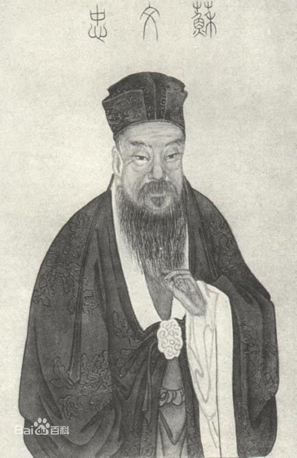

苏轼简介

北宋文学家、书法家、唐宋八大家之一
苏轼（1037年1月8日—1101年8月24日），字子瞻，又字和仲，号铁冠道人、东坡居士，世称苏东坡、苏仙。
汉族，眉州眉山（今属四川省眉山市）人，祖籍河北栾城，北宋文学家、书法家、画家。
嘉祐二年（1057年），苏轼进士及第。宋神宗时曾在凤翔、杭州、密州、徐州、湖州等地任职。元丰三年（1080年），
因“乌台诗案”被贬为黄州团练副使。宋哲宗即位后，曾任翰林学士、侍读学士、礼部尚书等职，并出知杭州、颍州、
扬州、定州等地，晚年因新党执政被贬惠州、儋州。宋徽宗时获大赦北还，途中于常州病逝。宋高宗时追赠太师，
谥号“文忠” 。苏轼是北宋中期的文坛领袖，在诗、词、散文、书、画等方面取得了很高的成就。其文纵横恣肆；
其诗题材广阔，清新豪健，善用夸张比喻，独具风格，与黄庭坚并称“苏黄”；其词开豪放一派，与辛弃疾同是豪
放派代表，并称“苏辛” ；其散文著述宏富，豪放自如，与欧阳修并称“欧苏”，为“唐宋八大家”之一。苏轼亦善书，
为“宋四家”之一；工于画，尤擅墨竹、怪石、枯木等。有《东坡七集》、《东坡易传》、《东坡乐府》等传世。
本 名 苏轼
别 称 苏东坡、苏文忠、苏仙
字 号 字子瞻，又字和仲
号东坡，又号铁冠道人、海上道人
所处时代 北宋
民族族群 汉族
出生地 四川眉山
出生时间 公元1037年1月8日
去世时间 公元1101年8月24日
主要作品 《东坡七集》《东坡易传》《东坡乐府》等
主要成就 “唐宋八大家”之一，豪放派主要代表，“宋四家”之一
追 赠 太师
谥 号 文忠
葬 处 郏城县钧台乡上瑞里
▪▪早年经历▪▪
苏轼于宋仁宗景祐三年十二月十九日（1037年1月8日）出生于眉州眉山，是初唐大臣苏味道之后。
苏轼的父亲苏洵，即《三字经》里提到的“二十七，始发奋”的“苏老泉”。苏洵发奋虽晚，但是很用功。苏轼其名“轼”原意为
车前的扶手，取其默默无闻却扶危救困，不可或缺之意。 庆历八年（1048年），苏洵因父丧居家，闭户读书，把自己
以学识品行教授给苏轼与幼子苏辙 。 苏轼生性放达，为人率真，深得道家风范。好交友、好美食，创造许多饮食精品，好品茗，
亦雅好游山林。
▪▪进京应试▪▪
嘉祐元年（1056年），苏轼首次出川赴京，参加朝廷的科举考试。苏洵带着二十一岁的苏轼、十九岁的苏辙，
自偏僻的西蜀地区，沿江东下，于嘉祐二年（1057年）进京应试。当时的主考官是文坛领袖欧阳修，小试官是诗坛宿将梅尧臣。
二人正锐意于诗文革新，苏轼清新洒脱的文风，一下子把他们震动了。策论的题目是《刑赏忠厚之至论》，
苏轼的《刑赏忠厚之至论》获得主考官欧阳修的赏识，却因欧阳修误认为是自己的弟子曾巩所作，为了避嫌，使他只得第二。
苏轼在文中写道：“皋陶为士，将杀人。皋陶曰杀之三，尧曰宥之三。”欧、梅二公既叹赏其文，却不知这几句话的出处。
及苏轼谒谢，即以此问轼，苏轼答道：“何必知道出处！”欧阳修听后，不禁对苏轼的豪迈、敢于创新极为欣赏，而且预见了苏轼的将来：
“此人可谓善读书，善用书，他日文章必独步天下。”
▪▪名动京师▪▪
在欧阳修的一再称赞下，苏轼一时声名大噪。他每有新作，立刻就会传遍京师。当父子名动京师、正要大展身手时，
突然传来苏轼苏辙的母亲病故的噩耗。二兄弟随父回乡奔丧。嘉祐四年（1059年）十月，守丧期满回京。嘉祐六年
（1061年），苏轼应中制科考试，即通常所谓的“三年京察”，入第三等，为“百年第一”，授大理评事、签书凤翔府判官。
四年后还朝，任判登闻鼓院。治平二年（1065年），苏洵病逝，苏轼、苏辙兄弟扶柩还乡，守孝三年。三年之后，苏轼还朝。
此时，震动朝野的王安石变法开始。苏轼的许多师友，包括当初赏识他的欧阳修在内，因反对新法与新任宰相王安石政见不合，
被迫离京。朝野旧雨凋零，苏轼眼中所见，已不是他二十岁时所见的“平和世界”。
▪▪自请出京▪▪
熙宁四年（1071年），苏轼上书谈论新法的弊病。王安石颇感愤怒，于是让御史谢景在神宗面前陈说苏轼的过失。
苏轼于是请求出京任职，被授为杭州通判。
熙宁七年（1074年）秋，苏轼调往密州（山东诸城）任知州。熙宁十年（1077年）四月至元丰二年（1079年）三月，
在徐州任知州。元丰二年（1079年）四月调为湖州知州。他在地方任职时革新除弊，因法便民，颇有政绩。
▪▪乌台诗案▪▪
元丰二年（1079年），四十三岁的苏轼被调为湖州知州。上任后，他即给神宗写了一封《湖州谢表》，
这本是例行公事，但苏轼是诗人，笔端常带感情，即使官样文章，也忘不了加上点个人色彩，说自己“愚不适时，难以追陪新进”，
“老不生事或能牧养小民”，这些话被新党利用，说他“愚弄朝，妄自尊大”、“衔怨怀怒”、“指斥乘舆”、“包藏祸心”，又讽刺政府，
莽撞无礼，对皇帝不忠，如此大罪可谓死有余辜。他们从苏轼的大量诗作中挑出他们认为隐含讥讽之意的句子，
一时间，朝廷内一片倒苏之声。
七月二十八日，上任才三个月的苏轼被御史台的吏卒逮捕，解往京师，受牵连者达数十人。这就是北宋
著名的“乌台诗案”（乌台，即御史台，因其上植柏树，终年栖息乌鸦，故称乌台）。
乌台诗案这一巨大打击成为苏轼一生的转折点。新党们非要置苏轼于死地不可，救援活动也在朝野同时展开。
不但与苏轼政见相同的许多元老纷纷上书，连一些变法派的有识之士也劝谏神宗不要杀苏轼。王安石当时退休金陵，
也上书说：“安有圣世而杀才士乎？”在大家努力下，这场诗案就因王安石“一言而决”，苏轼得到从轻发落，贬为黄州（今湖北黄冈）
团练副使，“本州安置”，受当地官员监视。苏轼下狱一百零三日，险遭杀身之祸。幸亏宋太祖赵匡胤时定下不杀士大夫的国策
，他才算躲过一劫。
▪▪被贬黄州▪▪
黄州团练副使一职相当低微，并无实权，而此时苏轼经此一役已变得心灰意冷。苏轼到任后，心情郁闷，
曾多次到黄州城外的赤壁山游览，写下了《赤壁赋》、《后赤壁赋》和《念奴娇·赤壁怀古》等名作，以此来寄托他谪居时的
思想感情。公务之余，他带领家人开垦城东的一块坡地，种田帮补生计。“东坡居士”的别号便是苏轼在这时起的。
▪▪东山再起▪▪
元丰七年（1084年），苏轼离开黄州，奉诏赴汝州就任。由于长途跋涉，旅途劳顿，苏轼的幼儿不幸夭折。
汝州路途遥远，且路费已尽，再加上丧子之痛，苏轼便上书朝廷，请求暂时不去汝州，先到常州居住，后被批准。当他准备
要南返常州时，神宗驾崩。常州一带水网交错，风景优美。他在常州居住，既无饥寒之忧，又可享美景之乐，而且远离了京
城政治的纷争，能与家人、众多朋友朝夕相处。苏轼于是选择常州作为自己的终老之地。
元丰八年（1085年），宋哲宗即位，高太后以哲宗年幼为名，临朝听政，司马光重新被启用为相，以王安石为首的新党被打压。苏轼复为朝奉郎知登州（蓬莱）。四个月后，以礼部郎中被召还朝。在朝半月，升为起居舍人。
三个月后，升中书舍人。不久，再又升翰林学士、知制诰，知礼部贡举。当苏轼看到新兴势力拼命压制王安石集团的人
物及尽废新法后，认为其与所谓“王党”不过一丘之貉，再次向朝廷提出谏议。他对旧党执政后，暴露出的腐败现象进行了抨击，
由此，他又引起了保守势力的极力反对，于是又遭诬告陷害。苏轼至此是既不能容于新党，又不能见谅于旧党，因而再度自求外调。
▪▪筑建苏堤▪▪
元祐四年（1089年），苏轼任龙图阁学士、知杭州。由于西湖长期没有疏浚，淤塞过半，“崶台平湖久芜漫，人经丰岁尚凋疏”，
湖水逐渐干涸，湖中长满野草，严重影响了农业生产。苏轼来杭州的第二年率众疏浚西湖，动用民工二十余万，
开除葑田，恢复旧观，并在湖水最深处建立三塔（今三潭映月）作为标志。他把挖出的淤泥集中起来，
筑成一条纵贯西湖的长堤，堤有六桥相接，以便行人，后人名之曰“苏公堤”，简称“苏堤”。
“东坡处处筑苏堤”，苏轼一生筑过三条长堤。苏轼被贬颍州（今安徽阜阳）时，对颍州西湖也进行了疏浚，
并筑堤。绍圣元年（1094年），苏轼被贬为远宁军节度副使、惠州（今广东惠阳）安置。年近六旬的苏轼，日夜奔驰，
千里迢迢赴贬所，受到了岭南百姓热情的欢迎。苏轼把皇帝赏赐的黄金拿出来，捐助疏浚西湖，并修了一条长堤。为此，
“父老喜云集，箪壶无空携，三日饮不散，杀尽村西鸡”，人们欢庆不已。
▪▪流落儋州▪▪
苏东坡夜游承天寺
苏轼在杭州过得很惬意，自比唐代的白居易。但元祐六年（1091年），他又被召回朝。但不久又因为政见不合，
元祐六年八月调往颍州任知州、元祐七年（1092年）二月任扬州知州、元祐八年（1093年）九月任定州知州。元祐八年高太后去世，
哲宗执政，新党再度执政，绍圣元年（1094年）六月，别为宁远军节度副使，再次被贬至惠阳（今广东惠州市）。
绍圣四年（1097年），年已六十二岁的苏轼被一叶孤舟送到了徼边荒凉之地海南岛儋州（今海南儋州）。据说在宋朝，
放逐海南是仅比满门抄斩罪轻一等的处罚。他把儋州当成了自己的第二故乡，“我本儋耳氏，寄生西蜀州”。他在这里办学堂，
介学风，以致许多人不远千里，追至儋州，从苏轼学。在宋代一百多年里，海南从没有人进士及第。但苏轼北归不久，
这里的姜唐佐就举乡贡。为此苏轼题诗：“沧海何曾断地脉，珠崖从此破天荒。”人们一直把苏轼看作是儋州文化的开拓者、
播种人，对他怀有深深的崇敬。在儋州流传至今的东坡村、东坡井、东坡田、东坡路、东坡桥、东坡帽等等，表达了人们的
缅怀之情，连语言都有一种“东坡话”。
▪▪最后结局▪▪
宋徽宗即位后，苏轼相继被调为廉州安置、舒州团练副使、永州安置。元符三年四月（1100年），朝廷颁行大赦，
苏轼复任朝奉郎。
北归途中，苏轼于建中靖国元年七月二十八日（1101年8月24日）在常州（今属江苏）逝世，享年六十五岁。
苏轼留下遗嘱葬汝州郏城县（今河南郏县）钧台乡上瑞里。次年，其子苏过遵嘱将父亲灵柩运至郏城县安葬。 宋高宗即位后，
追赠苏轼为太师，谥号“文忠”。
▪▪主要成就▪▪
▪▪文学成就▪▪
▪▪词作
参见：苏词、诗词一体、以诗为词
苏轼在词的创作上取得了非凡的成就，就一种文体自身的发展而言，苏词的历史性贡献又超过了苏文和苏诗。
苏轼继柳永之后，对词体进行了全面的改革，最终突破了词为“艳科”的传统格局，提高了词的文学地位，使词从音乐的附属品转变为一种独立的抒情诗体，从根本上改变了词史的发展方向。
苏轼对词的变革，基于他诗词一体的词学观念和“自成一家”的创作主张。自晚唐、五代以来，词一直被视为“小道”。
柳永虽然一生专力写词，推进了词体的发展，但却未能提高词的文学地位。而苏轼首先在理论上破除了诗尊词卑的观念。
他认为诗词同源，本属一体，词“为诗之苗裔”，诗与词虽有外在形式上的差别，但它们的艺术本质和表现功能应是一致的。
因此他常常将诗与词相提并论，由于他从文体观念上将词提高到与诗同等的地位，这就为词向诗风靠拢、实现词与诗的相互
沟通渗透提供了理论依据。
为了使词的美学品位真正能与诗并驾齐驱，苏轼还提出了词须“自是一家”的创作主张。
此处的“自是一家”之说，是针对不同于柳永词的“风味”而提出的，其内涵包括：追求壮美的风格和阔大的意境，词品应与人品相一致，
作词应像写诗一样，抒发自我的真实性情和独特的人生感受。因为只有这样才能“其文如其为人”（《答张文潜县丞书》），
在词的创作上自成一家。苏轼一向以文章气节并重，在文学上则反对步人后尘，因而他不满意秦观“学柳七作词”而缺乏“气格”。
扩大词的表现功能，开拓词境，是苏轼改革词体的主要方向。他将传统的表现女性化的柔情之词为扩展
为表现男性化的豪情之词，将传统上只表现爱情之词扩展为表现性情之词，使词像诗一样可以充分表现作者的性情怀抱和人格个性。
苏轼让充满进取精神、胸怀远大理想、富有激情和生命力的仁人志士昂首走入词世界，改变了词作原有的柔软情调，
开启了南宋辛派词人的先河。
与苏诗一样，苏词中也常常表现对人生的思考。这种对人生命运的理性思考，增强了词境的哲理意蕴。
苏轼虽然深切地感到人生如梦，但并未因此而否定人生，而是力求自我超脱，始终保持着顽强乐观的信念和超然自适的人生态度。
苏词比较完整地表现出作者由积极转而矛盾苦闷，力求超脱自适而不断追求的心路历程和他疏狂浪漫、
多情善思的个性气质。继柳永、欧阳修之后，苏轼进一步使词作中的抒情人物形象与创作主体由分离走向同一。
苏词既向内心的世界开拓，也朝外在的世界拓展。不同于晚唐、五代文人词所表现的狭小的生活场景，
苏轼不仅在词中大力描绘了作者日常交际、闲居读书及躬耕、射猎、游览等生活场景，而且进一步展现了大自然的壮丽景色。
苏轼用自己的创作实践表明：词是无事不可写，无意不可入的。词与诗一样，具有充分表现社会生活和
现实人生的功能。由于苏轼扩大了词的表现功能，丰富了词的情感内涵，拓展了词的时空场景，从而提高了词的艺术品味，
把词堂堂正正地引入文学殿堂，使词从“小道”上升为一种与诗具有同等地位的抒情文体。
“以诗为词”的手法则是苏轼变革词风的主要武器。所谓“以诗为词”，是将诗的表现手法移植到词中。
苏词中较成功的表现有用题序和用典故两个方面。
有了词题和词序，既便于交代词的写作时地和创作缘起，也可以丰富和深化词的审美内涵。在词中大量使事用典，
也始于苏轼。词中使事用典，既是一种替代性、浓缩性的叙事方式，也是一种曲折深婉的抒情方式。苏词大量运用题序和典故，
丰富和发展了词的表现手法，对后来词的发展产生了重大影响。
从本质上说，苏轼“以诗为词”是要突破音乐对词体的制约和束缚，把词从音乐的附属品变为一种独立的抒情诗体。
苏轼写词，主要是供人阅读，而不求人演唱，故注重抒情言志的自由，虽也遵守词的音律规范而不为音律所拘。正因如此，
苏轼作词时挥洒如意，即使偶尔不协音律规范也在所不顾。也正是如此，苏词像苏诗一样，表现出丰沛的激情，
丰富的想象力和变化自如、多姿多彩的语言风格。虽然苏轼现存的三百六十二首词中，大多数词的风格仍与传统的婉约柔美之风比较接近，
但已有相当数量的作品体现出奔放豪迈、倾荡磊落如天风海雨般的新风格，如《水调歌头·明月几时有》。
在两宋词风转变过程中，苏轼是关键人物。王灼《碧鸡漫志》说：“东坡先生非心醉于音律者，偶尔作歌，指出向上一路，
新天下耳目，弄笔者始知自振。”强化词的文学性，弱化词对音乐的依附性，是苏轼为后代词人所指出的“向上一路”。
后来的南渡词人和辛派词人就是沿着此路而进一步开拓发展的。 [24]
▪▪诗作
苏轼对社会的看法和对人生的思考都毫无掩饰地表现在其文学作品中，其中又以诗歌最为淋漓酣畅。
在二千七百多首苏诗中，干预社会现实和思考人生的题材十分突出。苏轼对社会现实中种种不合理的现象抱着“一肚皮不入时宜”的态度，
始终把批判现实作为诗歌的重要主题。更可贵的是，苏轼对社会的批判并未局限于新政，也未局限于眼前，
他对封建社会中由来已久的弊政、陋习进行抨击，体现出更深沉的批判意识。
苏轼一生宦海浮沉，奔走四方，生活阅历极为丰富。他善于从人生遭遇中总结经验，也善于从客观事物中见出规律。
在他眼中，极平常的生活内容和自然景物都蕴含着深刻的道理，如《题西林壁》和《和子由渑池怀旧》两诗。在这些诗中，
自然现象已上升为哲理，人生的感受也已转化为理性的反思。尤为难能可贵的是，诗中的哲理是通过生动、
鲜明的艺术意象自然而然地表达出来，而不是经过逻辑推导或议论分析所得。这样的诗歌既优美动人，又饶有趣味，是名副其实的理趣诗。
“不识庐山真面目”和“雪泥鸿爪”一问世即流行为成语，说明苏轼的理趣诗受到普遍喜爱。苏诗中类似的作品还有很多，
如《泗州僧伽塔》、《饮湖上初晴后雨》、《慈湖夹阻风》等。苏轼极具灵心慧眼，所以到处都能发现妙理新意。
深刻的人生思考使苏轼对沉浮荣辱持有冷静、旷达的态度，这在苏诗中有充分的体现。苏轼在逆境中的诗篇当然
含有痛苦、愤懑、消沉的一面，但苏轼更多的诗则表现了对苦难的傲视和对痛苦的超越。
苏轼学博才高，对诗歌艺术技巧的掌握达到了得心应手的纯熟境界，并以翻新出奇的精神对待艺术规范，纵意所如，
触手成春。而且苏诗的表现能力是惊人的，在苏轼笔下几乎没有不能入诗的题材。
以“元祐”诗坛为代表的北宋后期是宋诗的鼎盛时期，苏轼与王安石、黄庭坚、陈师道等人的创作将宋诗艺术推向了高峰。
就风格个性的突出、鲜明而言，王、黄、陈三家也许比苏轼诗更引人注目。然而论创作成就，
则苏轼无疑是北宋诗坛上第一大家。在题材的广泛、形式的多样和情思内蕴的深厚这几个维度上，苏诗都是出类拔萃的。更重要的是，
苏轼具有较强的艺术兼容性，他在理论上和创作中都不把某一种风格推到定于一尊的地位。这样，苏轼虽然在创造宋诗生新面
貌的过程中作出了巨大的贡献，但他基本上避免了宋诗尖新生硬和枯燥乏味这两个主要缺点。所以苏轼在总体成就上实现了
对同时代诗人的超越，成为最受后代广大读者欢迎的宋代诗人。 [24]
▪▪文章
苏轼的文学思想是文、道并重。他推崇韩愈和欧阳修对古文的贡献，都是兼从文、道两方面着眼的。但是苏
轼的文道观在北宋具有很大的独特性。首先，苏轼认为文章的艺术具有独立的价值，如“精金美玉，文章并不仅仅是载道的工具，
其自身的表现功能便是人类精神活动的一种高级形态。其次，苏轼心目中的“道”不限于儒家之道，而是泛指事物的规律。
所以苏轼主张文章应像客观世界一样，文理自然，姿态横生。他提倡艺术风格的多样化和生动性，反对千篇一律的统一文风，
认为那样会造成文坛“弥望皆黄茅白苇”般的荒芜。
正是在这种独特的文学思想指导下，苏轼的散文呈现出多姿多彩的艺术风貌。他广泛地从前代的作品中汲取艺术营养，
其中最重要的渊源是孟子和战国纵横家的雄放气势、庄子的丰富联想和自然恣肆的行文风格。苏轼确实具有极高的表现力，
在他笔下几乎没有不能表现的客观事物或内心情思。苏文的风格则随着表现对象的不同而变化自如，像行云流水一样的自然、
畅达。韩愈的古文依靠雄辩和布局、蓄势等手段来取得气势的雄放，而苏文却依靠挥洒如意、思绪泉涌的方式达到了
同样的目的。苏文气势雄放，语言却平易自然，这正是宋文异于唐文的特征之一。
苏轼擅长写议论文。他早年写的史论有较浓的纵横家习气，有时故作惊人之论而不合义理，
如《贾谊论》责备贾谊不知结交大臣以图见信于朝廷，《范增论》提出范增应为义帝诛杀项羽。但也有许多独到的见解，
如《留侯论》谓圯上老人是秦时的隐君子，折辱张良是为了培育其坚忍之性；《平王论》批评周平王避寇迁都之失策，见解新颖而深刻，
富有启发性。这些史论在写作上善于随机生发，翻空出奇，表现出高度的论说技巧，成为当时士子参加科场考试的范文，
所以流传极广。苏轼早年的政论文也有类似的风格特点，但随着阅历的加深，纵横家的习气遂逐渐减弱，例如元祐以后所写的一些奏议，
内容上有的放矢，言词则剀切沉着，接近于贾谊、陆贽的文风。
史论和政论虽然表现出苏轼非凡的才华，但杂说、书札、序跋等议论文，更能体现苏轼的文学成就。
这些文章同样善于翻新出奇，但形式更为活泼，议论更为生动，而且往往是夹叙夹议，兼带抒情。它们以艺术感染力来加强逻辑说服力，
所以比史论和政论更加具备美文的性质。
苏轼的叙事记游之文，叙事、抒情、议论三种功能更是结合得水乳交融。
由于苏轼作文以“辞达”为准则，所以当行即行，当止就止，很少有芜词累句，这在他的笔记小品中表现得最为突出。
如《记承天夜游》，全文仅八十余字，但意境超然，韵味隽永，为宋代小品文中的妙品。
苏轼的辞赋和四六也取得了很高的成就。他的辞赋继承了欧阳修的传统，但更多地融入了古文的疏宕萧散之气，
吸收了诗歌的抒情意味，从而青出于蓝而胜于蓝，创作了《赤壁赋》和《后赤壁赋》这样的名篇。《赤壁赋》沿用赋体主客问答、
抑客伸主的传统格局，抒写了自己的人生哲学，同时也描写了长江月夜的幽美景色。全文骈散并用，情景兼备，堪称优美的散文诗。
苏轼甚至在四六中也同样体现出行云流水的风格，他在翰林院任职时所拟的制诰曲赡高华，浑厚雄大，为台阁文字中所罕见。
他遭受贬谪后写的表启更是真切感人，是四六体中难得的性情之作。
苏轼的散文在宋代与欧阳修、王安石齐名，但如果单从文学的角度来看，则苏文无疑是宋文中成就最高的一家。
▪▪艺术成就▪▪
▪▪书法
苏轼擅长写行书、楷书，与黄庭坚、米芾、蔡襄并称为“宋四家”。他曾经遍学晋、唐、五代的各位名家之长，
再将王僧虔、徐浩、李邕、颜真卿、杨凝式等名家的创作风格融会贯通后自成一家。他曾自称：“我书造意本无法”、
“自出新意，不践古人”。黄庭坚称他：“早年用笔精到，不及老大渐近自然。”这说明苏轼一生屡经坎坷，致使他的书法风格跌宕。
存世作品有《赤壁赋》、《黄州寒食诗》和《祭黄几道文》等帖。
▪▪绘画
苏轼擅长画墨竹，且绘画重视神似，主张画外有情，画要有寄托，反对形似，反对程序的束缚，
提倡“诗画本一律，天工与清新”，而且明确地提出了“士人画”的概念，对以后“文人画”的发展奠定了一定的理论基础。
其作品有《古木怪石图卷》、《潇湘竹石图卷》等。
《黄州寒食诗帖跋 黄州寒食诗帖》
▪▪主要作品▪▪
▪▪古文
《荀卿论》、《范增论》、《留侯论》、《贾谊论》、《晁错论》、《东坡志林》、《随记集》、《刑赏忠厚之至论》、《石钟山记》、《记承天寺夜游》、《重巽以申命论》、《进策》、《天石砚铭（并序）》、《策别课百官》六篇、《策别安万民》六篇、《策别厚货财》二篇、《策别训兵旅》三篇、《策断》四篇、《黠鼠赋》、《记游定惠院》（一作《记游定慧院》
诗歌
《赤壁赋》《后赤壁赋》《东栏梨花》《出颍口初见淮山是日至寿州》《春宵》《海棠》《和子由渑池怀旧》《和子由踏青》《花影》《惠崇春江晚景》《腊日游孤山访惠勤惠思二僧》《六月二十七日望湖楼醉书》《三月二十九日二首》《上元侍宴》《石苍舒醉墨堂》《书李世南所画秋景》《游金山寺》《题西林壁》《望海楼晚景》《雪后北台书壁》《饮湖上初晴后雨》《有美堂暴雨》《赠刘景文》《章钱二君见和复次韵答之》 [28]
词作
《少年游·去年相送》《江城子·湖上与张先同赋》
《虞美人·有美堂赠述古》《南乡子·送述古》
《永遇乐·长忆别时》《减字木兰花·空床响琢》
《蝶恋花·密州上元》《江城子·十年生死两茫茫》
《望江南·春未老》《水调歌头·明月几时有》
《洞仙歌·江南腊尽》《阳关曲·中秋作》
《浣溪沙·照日深红暖见鱼》《浣溪沙·旋抹红妆看使君》
《浣溪沙·麻叶层层苘叶光》《浣溪沙·簌簌衣巾落枣花》
《浣溪沙·软草平莎过雨新》《永遇乐·明月如霜》
《南歌子·雨暗初疑夜》《浣溪沙·覆块青青麦未苏》
《浣溪沙·醉梦昏昏晓未苏》《水龙吟·小舟横截春江》
《定风波·莫听穿林打叶声》《浣溪沙·山下兰芽短浸溪》
《哨遍·为米折腰》《洞仙歌·冰肌玉骨》《念奴娇·赤壁怀古》
《南乡子·霜降水痕收》《临江仙·夜饮东坡醒复醉》
《卜算子·黄州定慧院寓居作》《满庭芳·三十三年》
《水调歌头·落日绣帘卷》《定风波·常羡人间琢玉郎》
《鹧鸪天·林断山明竹隐墙》《浣溪沙·细雨斜风作小寒》
《水调歌头·昵昵儿女语》《水龙吟·次韵章质夫杨花词》
《八声甘州·有情风万里卷潮来》《木兰花令·次欧公西湖韵》
《青玉案·三年枕上吴中路》《贺新郎·乳燕飞华屋》
《浣溪沙·门外东风雪洒裾》《行香子·过七里滩》
《点绛唇·不用悲秋》《满江红·寄鄂州朱使君寿昌》
《念奴娇·中秋》《水龙吟·雁》《醉翁操·琅然》
书法作品
《中山松醪赋》《洞庭春色赋》《人来得书帖》
《答谢民师论文帖》《赤壁赋》
《江上帖》《黄州寒食诗帖》
《李白仙诗帖》《次韵秦太虚诗帖》
《渡海帖》《祭黄几道文卷》《梅花诗帖》《新岁展庆帖》
《宝月帖》《令子帖》《东武帖》《北游帖》
《致南圭使君帖》《次辩才韵诗》《一夜帖》
《宸奎阁碑》《致若虚总管尺牍》《怀素自序》
《近人帖》《与范子丰》
（“苏轼部分书法作品”图册来源： [30] ）
▪▪绘画作品
《潇湘竹石图》《小鸡啄米图》《枯木怪石图》《偃松图卷》
书法真迹图